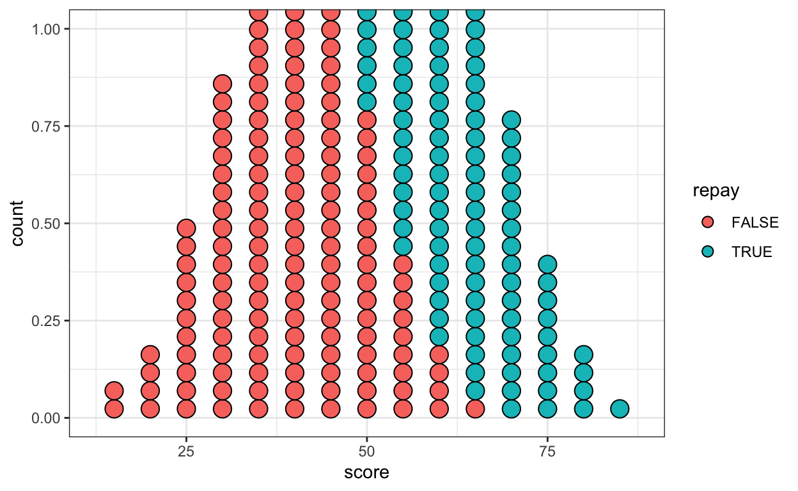
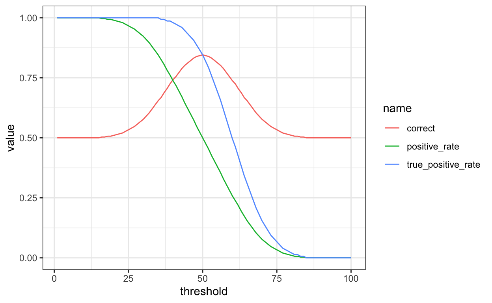
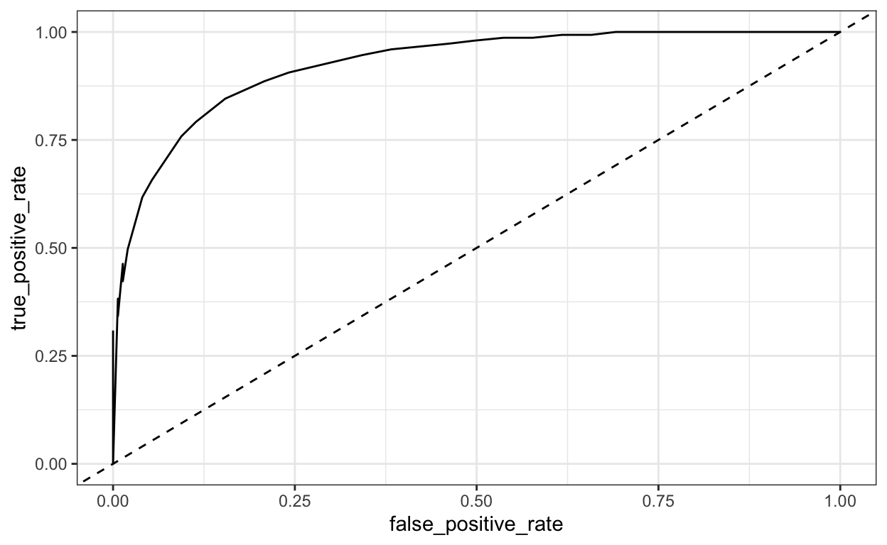

Getting Started
The goal of this exercise is to practice with different ways of quantifying the performance of a classification model.
Topics:
- Compute metrics for classification
The goal of this exercise is to practice with metrics of classifier performance.
Explore
Click the following link to open an interactive activity. Keep this in a second tab next to this tutorial; the tutorial will focus your attention on some parts of the exercise and ask some targeted questions.
We’ll focus today on the one-group example; we’ll return to the part about blue vs orange groups later.
Spend about 10 minutes playing with the “Threshold Decision” demonstration. Think about the following questions:
What are the “scores”? What real-life concept does this capture? (Do you know your score?)
Why might a bank want to use “score” to decide whether to grant a loan? (Why don’t banks grant all loan applications? Why do they ever grant loans?)
What sort of predictions are being made here? What constitutes a “correct” prediction?
Slowly sweep the threshold from 0 to 100. On scrap paper, sketch how Correct, True Positive Rate, and Positive Rate change as the threshold changes.
Implement
Now let’s implement those metrics ourselves to check our understanding.
We’ll start by generating some sample data that’s roughly like the data in the demo. See the appendix for the code, but here’s the results:
peopleEach row is a person. We are given their score (which
we’ll imagine was the result of some model that computed their credit
score based on data from their credit history) and a boolean (“logical”)
value repay that indicates whether they would actually
repay, if (hypothetically) the bank actually gave everyone a
loan.
Notice: if the bank doesn’t decide to give them a loan, we
don’t know repay. So the Google demo only actually works in
an imaginary world. But it’s still useful to think through the
situations and metrics.
Here’s a plot of this data:

And here’s a summary of that data. Think through why the
second summarize statement works, you’ll need that
later. (I call this the “sum-as-count” pattern, because the
sum() of a bunch of TRUE and
FALSE values gives the number of TRUEs,
because TRUE is interpreted as 1.)
people %>%
group_by(repay) %>%
summarize(mean_score = mean(score))people %>%
summarize(num_repayed = sum(repay),
frac_repayed = mean(repay))Exercise 1. Add a new column, granted,
to the people dataframe that indicates if the bank grants
the loan. Like the website, grant a loan if the score exceeds some fixed
threshold. (Use a threshold that results in all 4 colors
being visible in the Positive Rate pie.) Save the results in
decisions.
threshold <- 64
decisions <-
people %>%
mutate(granted = score > ____)threshold <- 64
decisions <-
people %>%
mutate(granted = score >= threshold)Decisions
Exercise 2. Add a column to decisions
called outcome that gives a label to each decision as a
“True Positive”, “False Positive”, etc. Use case_when with
conditions like repay & !granted. Count how many of
each outcome occurs at your current threshold.
outcomes <-
decisions %>%
mutate(
correct = repay == "FIXME",
outcome = case_when(
repay & granted ~ "FIXME",
repay & !granted ~ "FIXME",
!repay & granted ~ "FIXME",
!repay & !granted ~ "FIXME"
)
)
outcomes %>%
summarize(mean(correct))
outcome_counts <- outcomes %>%
group_by(outcome) %>%
summarize(n = n())
outcome_countsYou should get:
outcomes <-
decisions %>%
mutate(
correct = repay == granted,
outcome = case_when(
repay & granted ~ "True Positive",
repay & !granted ~ "False Negative",
!repay & granted ~ "False Positive",
!repay & !granted ~ "True Negative"
)
)
outcomes %>%
summarize(mean(correct))
outcome_counts <- outcomes %>%
group_by(outcome) %>%
summarize(n = n())
outcome_countsClassifier Metrics
Exercise 3. Compute the Positive Rate, the True Positive Rate, and Correctness. One of them has been done for you. Check all of your results against the webapp; the numbers should be close although they may differ slightly because the data was not constructed identically.
Hint: remember the following rules about Boolean logic:
TRUE & FALSE[1] FALSETRUE & TRUE[1] TRUE!TRUE[1] FALSE!FALSE[1] TRUEdecisions %>%
summarize(
positive_rate = 1, # FIXME: fraction of loans that were granted at this threshold
true_positive_rate = sum(granted & repay) / sum(repay), # frac of positives that were correct
correctness = 1, # FIXME: number of loans where this threshold results in a correct decision
true_negative_rate = 1, # FIXME: frac of negatives that were correct
false_positive_rate = 1 # FIXME: frac of negatives that were incorrect
)You should get:
Exercise 4: Compute the sensitivity and specificity. You may consult the Wikipedia Page if it’s helpful. (Have you already computed one of these?) Think about what “sensitivity” and “specificity” mean in this scenario.
decisions %>%
summarize(
sensitivity = 1, # FIXME
specificity = 1 # FIXME
)You should get:
- Adjust the
thresholdto maximize the Correct rate. What is the True Positive Rate then? What trade-off do we have to make if we want to maximize True Positive Rate instead?
Wrapping Up
- If the bank uses equal thresholds for each group, it might be accused of discrimination. How might that accusation be worded?
- To address that accusation, the bank might choose to use unequal
thresholds.
- What thresholds might those be?
- But then it might be accused of a different kind of discrimination. How might that accusation be worded?
- In light of all of this, what thresholds should this bank set?
Bonus: All possible thresholds
- bonus: Create the following plot. You will need
expand_grid(threshold = 1:100).

We can use this to plot an ROC curve (see the textbook):

Here’s an exercise box to try it:
# Your code hereAppendix
To run any code chunk from this tutorial in your own environment, use:
library(tidyverse)
library(tidymodels)
theme_set(theme_bw())
options(scipen = 5) # encourage metrics to print in fixed-point notation
options(dplyr.summarise.inform = FALSE) # silence a warning message
set.seed(0)
# Not used:
# make_group_rand <- function(n, mean, sd, ...) {
# tibble(score = rnorm(n, mean = mean, sd = sd), ...)
# }
# "Deterministic normal": for n points, we expect n * pnorm(x, mu, sd) of them to be below x.
make_group <- function(n, mean, sd, ...) {
tibble(score = 0:100) %>%
mutate(n = floor(n * pnorm(score, mean, sd))) %>%
mutate(delta = c(diff(n), 0)) %>%
uncount(delta) %>%
select(score) %>%
mutate(...)
}
people <- bind_rows(
make_group(150, 60, 10, repay = TRUE),
make_group(150, 40, 10, repay = FALSE)
)
threshold <- 64
decisions <-
people %>%
mutate(granted = score >= threshold)